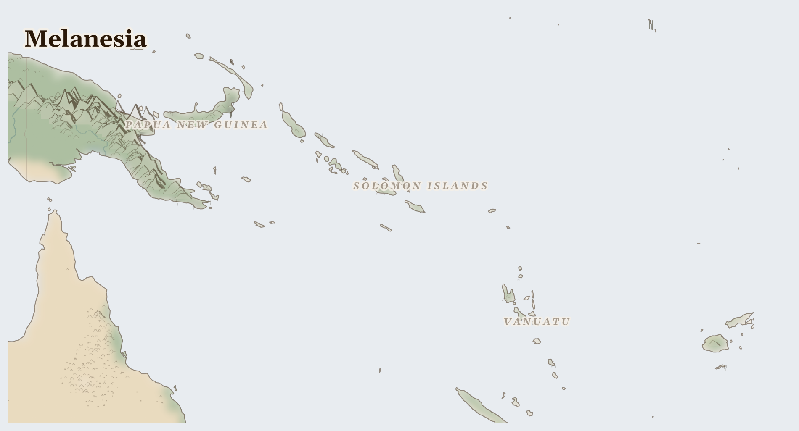

Melanesia
Vanuatu, Solomon Islands, Papua New Guinea and 2 more countries
Oceania
A scatter of steep green volcanic islands in the warm western Pacific — Papua New Guinea, Fiji, the Solomon Islands, Vanuatu. Rainforest tumbles down to coral lagoons, and here live more different peoples, speaking more different languages, than almost anywhere else on Earth.
How Life Works Here
Islanders fish the reefs and lagoons, grow taro and yams in forest gardens, and share the catch and harvest through big feasts. On some islands, huge mines dig for gold, which is shipped far away, and boats chase the tuna that swim these seas.
Highland communities cultivating 200+ crop varieties in rotation, Women managing garden production (70-80% of agricultural labour), Inter-clan pig exchange networks (social and economic glue).
Village fishing communities with customary reef tenure, Women gleaning shellfish and seaweed on reef flats, Sea cucumber divers supplying Chinese dried seafood markets.
Indigenous landowner communities (often displaced, always bearing environmental cost), Mining corporations (Barrick Gold, Newcrest, Rio Tinto).
What Is Happening
These are mostly peaceful islands with two real care questions. One is the mining: on Papua New Guinea a great gold mine pushed some families off their land and spoiled a river — and communities are speaking up to protect what's left. The other is the sea and sky: bigger storms and warmer water threaten the reefs and coastal villages, so island people are rebuilding stronger and caring for their reefs, which shelter their fish and their shores.
Something Wonderful
On the one island of Papua New Guinea, people speak more than eight hundred different languages — more than a tenth of all the languages in the whole world, on a single island. Imagine a place where the next valley over might speak a language you've never heard.
Let's Do Something Together
Make a Wind Flag
Tie a ribbon or strip of cloth to a stick and hold it up outside. Which way does the wind blow? Wind carries rain clouds to thirsty places — but also carries dust and smoke. In some countries, dust storms cover whole cities and people cannot breathe or see.
- stick or pencil
- ribbon or strip of cloth
For grown-ups
Atmospheric dust transport from desertifying regions affects air quality, respiratory health, and solar radiation hundreds of kilometres downwind. Saharan dust reaches Europe; Asian dust reaches North America.
Let Us Pray Together
God, calm the storms. Protect families when the dust and wind come.
Leader: We pray for the displaced. For the tens of thousands driven from their homes.
All: Lord, hear our prayer.
Leader: We pray for those living under violence. For communities enduring fighting across Melanesia, an..
All: Lord, hear our prayer.
Leader: We pray for Papua New Guinea. Especially for Papua New Guinea, facing the most severe convergence of crises in this region.
All: Lord, hear our prayer.
Leader: We pray for the helpers. For humanitarian workers and missionaries in Melanesia.
All: Lord, hear our prayer.
His foundation is on the holy mountains. The Lord loves the gates of Zion more than all the dwellings of Jacob. Glorious things are spoken of you, Zion, city of our God.
Collect
O God, you declare your almighty power most chiefly in showing mercy and pity: mercifully grant to us such a measure of your grace, that we, running the way of your commandments, may receive your gracious promises, and be made partakers of your heavenly treasure; through Jesus Christ your Son our Lord, who is alive and reigns with you, in the unity of the Holy Spirit, one God, now and for ever.
Amen.
Talk About It
On these islands, when there is a good catch or harvest, everyone shares it at a great feast. When your family has more than enough of something, who could you invite to share it?
One Thing We Can Do
Tuna in a tin may have been caught in these bright Pacific seas. If you eat it, think of the island fishers — and pray for their reefs, their languages, and their homes as the storms grow stronger.